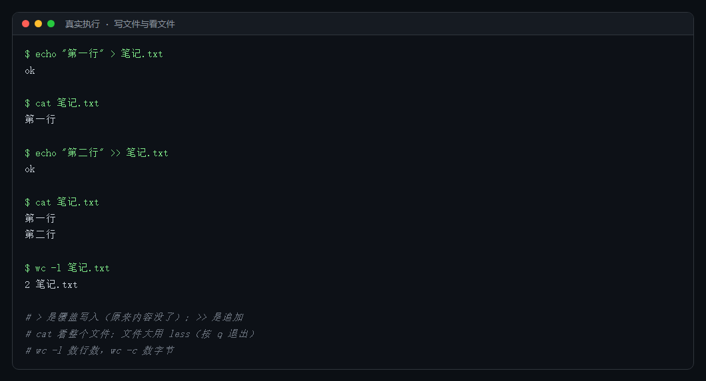
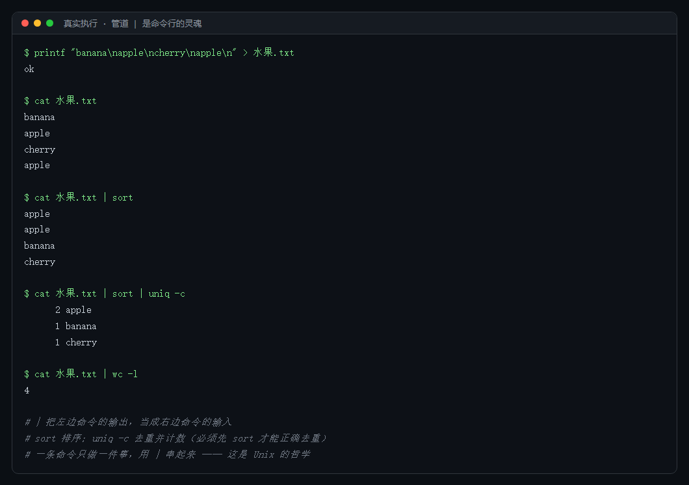
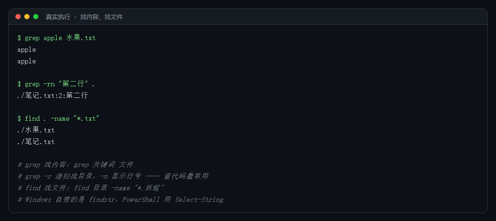
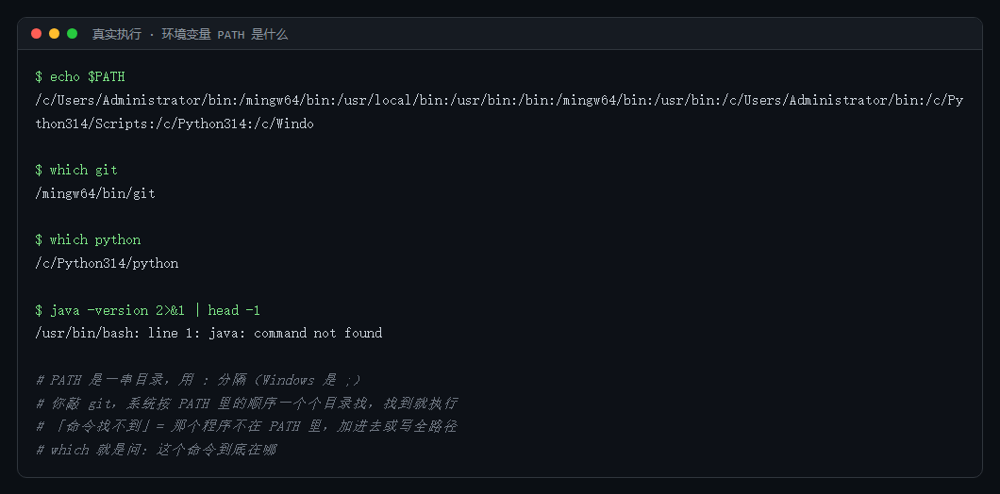
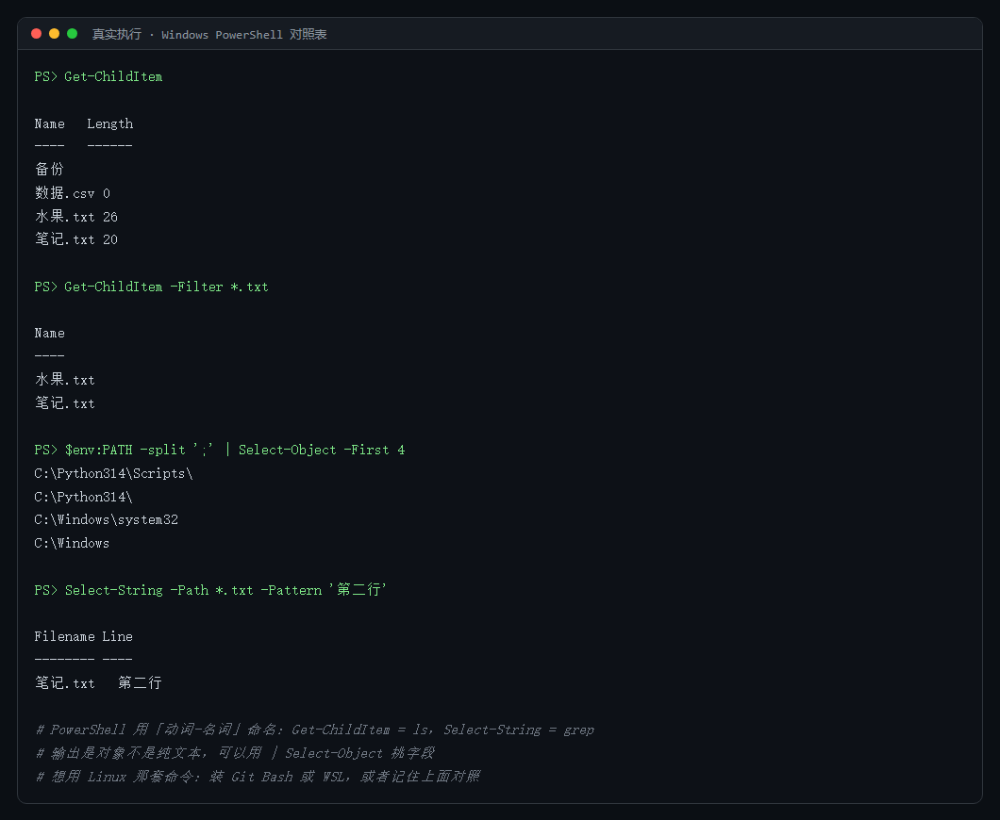

命令行
🟢 本章所有截图都是在你电脑上真实敲出来的（Git Bash + PowerShell）
0 为什么要学命令行
不是炫技。是有些事情只有命令行能做，而且快得多。
| 场景 | 点点点 | 命令行 |
|---|---|---|
| 在 1000 个文件里搜关键词 | 一个个打开看 | grep -rn 关键词 . 一秒出结果 |
| 批量改名 | 手改 100 次 | 一行循环 |
| 连服务器 | 根本没有 GUI | ssh 是唯一方式 |
| 部署上线 | 没有按钮 | 全是命令 |
| 写脚本自动化 | 做不到 | 本来就长这样 |
💡 核心就 4 件事：移动（cd）、查看（ls/cat）、操作（cp/mv/rm）、组合（管道 |）。
1 打开终端（Windows 三个选择）
| 终端 | 怎么开 | 特点 |
|---|---|---|
| PowerShell | Win + X → 终端 / 搜索"PowerShell" | Windows 原生，命令是"动词-名词" |
| CMD | 搜索"cmd" | 老古董，命令少，不推荐学 |
| Git Bash | 装了 Git 后右键菜单 → Git Bash Here | 推荐：Linux 命令，和服务器一致 |
🎯 建议：学 Git Bash。因为服务器全是 Linux，你在本机练的命令可以直接用上去，不用记两套。
⚠️ 本章截图混合了两种：
$ 开头是 Git Bash，PS> 开头是 PowerShell。3 写文件与看文件

真实执行：echo 重定向、cat、wc
| 符号/命令 | 作用 |
|---|---|
> | 覆盖写入（原内容没了） |
>> | 追加写入 |
cat | 查看整个文件 |
less | 分页查看（按 q 退出） |
head -20 | 看前 20 行 |
tail -f | 实时跟踪末尾（看日志必备） |
⚠️
> 和 >> 差一个字符，效果天差地别。写配置前想清楚是覆盖还是追加。4 管道 |：命令行的灵魂
一个命令只做一件小事，用 | 把小工具串成大工具。

真实执行：sort → uniq -c 统计每个水果出现几次
1
| 把左边命令的输出，变成右边命令的输入
2
sort 排序 → uniq -c 去重计数（必须先 sort，否则去重不干净）
3
常见组合：cat log | grep ERROR | wc -l = 数有多少条错误
🧠 这就是 Unix 哲学：每个程序只做好一件事，靠管道组合出无限可能。
5 找内容、找文件

真实执行：grep 找内容，find 找文件
| 需求 | 命令 |
|---|---|
| 在文件里找文字 | grep 关键词 文件 |
| 在整个项目里找 | grep -rn "关键词" . |
| 忽略大小写 | grep -i |
| 按文件名找 | find . -name "*.py" |
| Windows 原生替代 | findstr（CMD）/ Select-String（PowerShell） |
🔥
grep -rn 是查代码最常用的命令，记住它就够用很久。6 PATH：为什么命令能直接敲

真实执行：echo $PATH、which 查命令位置
1
你敲 git，系统按 PATH 里的目录顺序一个个找，找到就执行
2
全部找不到 → 报「command not found」/「不是内部或外部命令」
3
which 命令 就是问：它到底在哪
⚠️ "我装了但命令找不到" —— 99% 是没加进 PATH，或者装完没重开终端。
7 PowerShell 对照表
不得不用 PowerShell 时，照着这张表换算。

真实执行：Get-ChildItem / Select-String / $env:PATH
| Git Bash / Linux | PowerShell | 作用 |
|---|---|---|
ls | Get-ChildItem (gci) | 列文件 |
cd | Set-Location (cd) | 切目录 |
cat | Get-Content (gc) | 看文件 |
grep | Select-String (sls) | 找内容 |
rm | Remove-Item (rm) | 删除 |
cp | Copy-Item (cp) | 复制 |
$PATH | $env:PATH | 环境变量 |
which | Get-Command | 命令在哪 |
💡 PowerShell 输出的是对象不是纯文本，所以能
| Select-Object 字段 挑列、| Sort-Object 排序、| Export-Csv 导出。8 快捷键与坑
| 快捷键 | 作用 |
|---|---|
Tab | 自动补全路径/命令（最该练的习惯） |
↑ / ↓ | 翻历史命令 |
Ctrl + C | 中断当前命令 |
Ctrl + L | 清屏 |
Ctrl + A / E | 跳到行首 / 行尾 |
Ctrl + R | 搜索历史命令 |
🚫 两个绝对不能乱敲的命令：
rm -rf / —— 删根目录（Linux）rm -rf * —— 删当前目录所有东西，不进回收站，无法恢复其他常见的坑：
① 命令 = 命令 + 空格 + 参数，少空格会报错
② 文件名有空格要加引号
③ 大小写敏感（Linux 上
④ 当前目录不在 PATH 里，运行本目录程序要写
① 命令 = 命令 + 空格 + 参数，少空格会报错
② 文件名有空格要加引号
③ 大小写敏感（Linux 上
File.txt ≠ file.txt）④ 当前目录不在 PATH 里，运行本目录程序要写
./程序名✅ 练习建议：在
~/cli-demo 这种随便造的目录里练，随便删随便建，练熟了再去动真实文件。